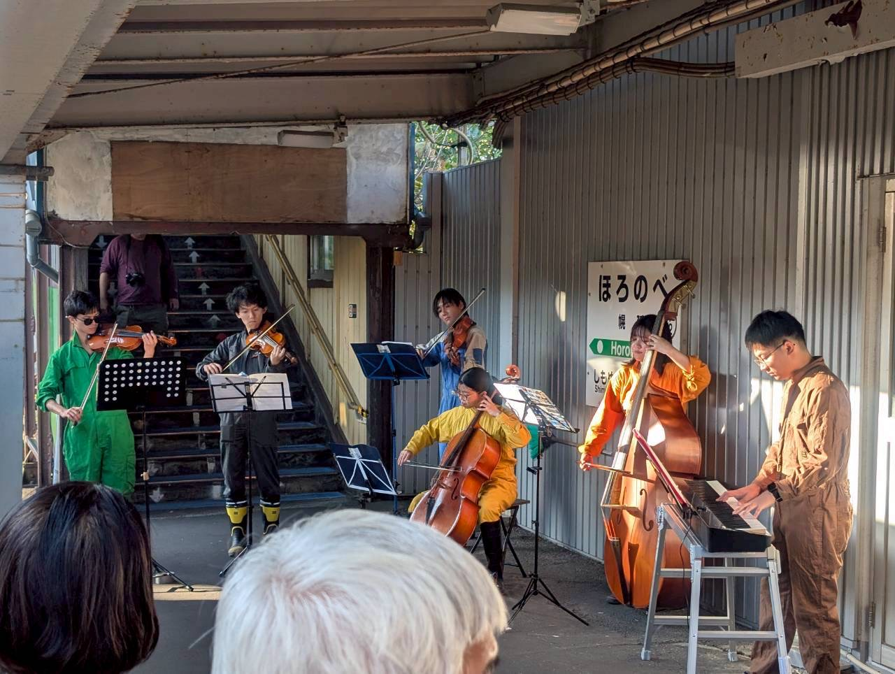
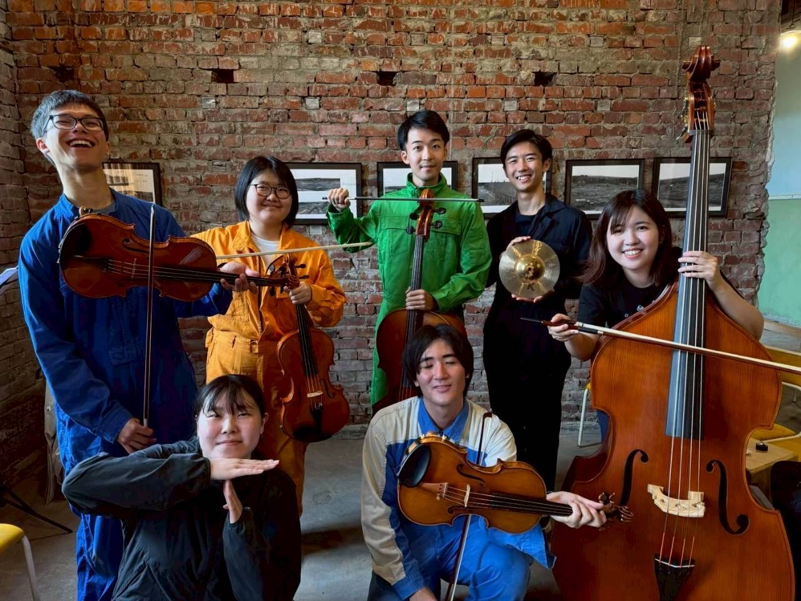
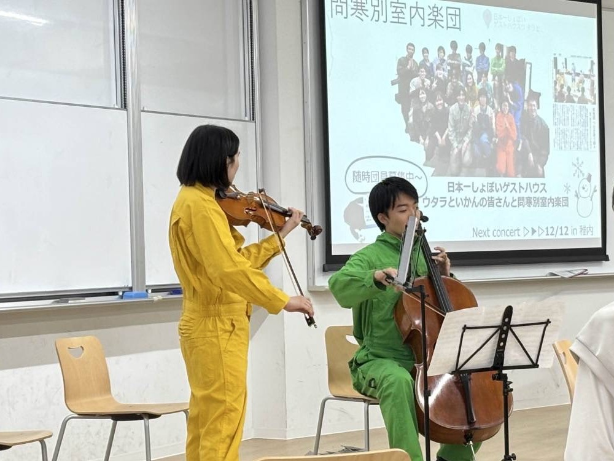
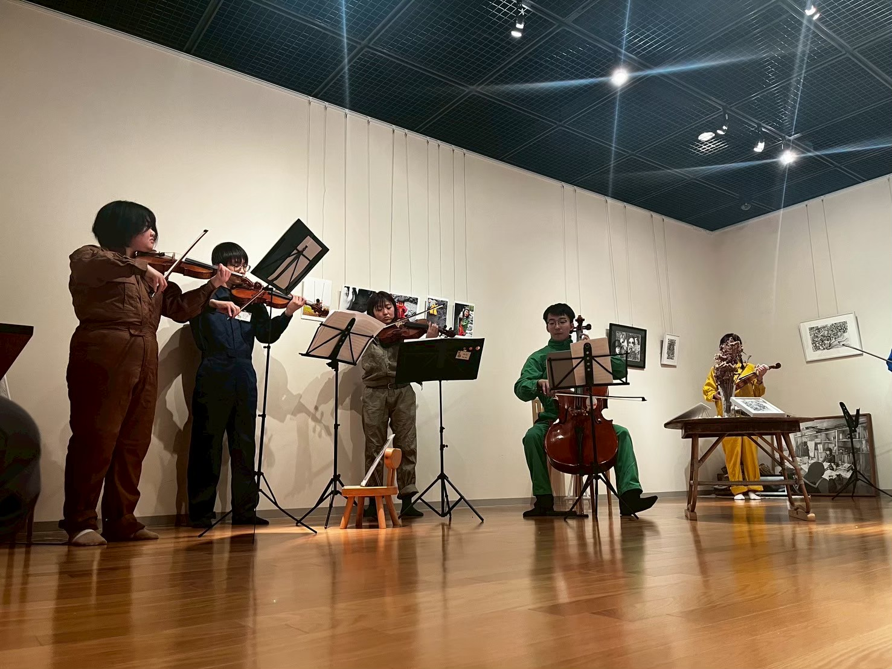
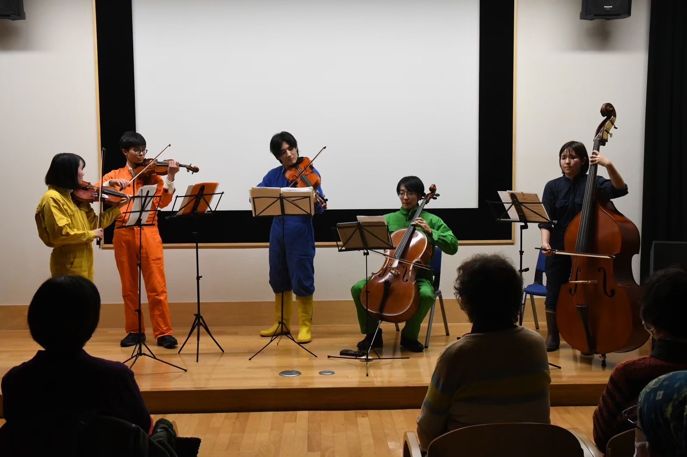
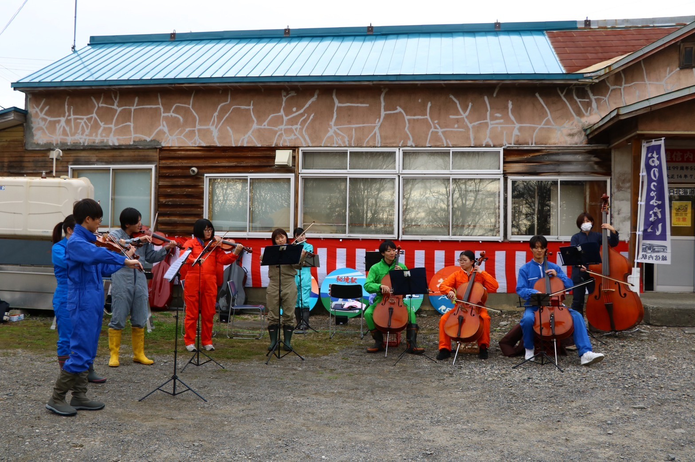
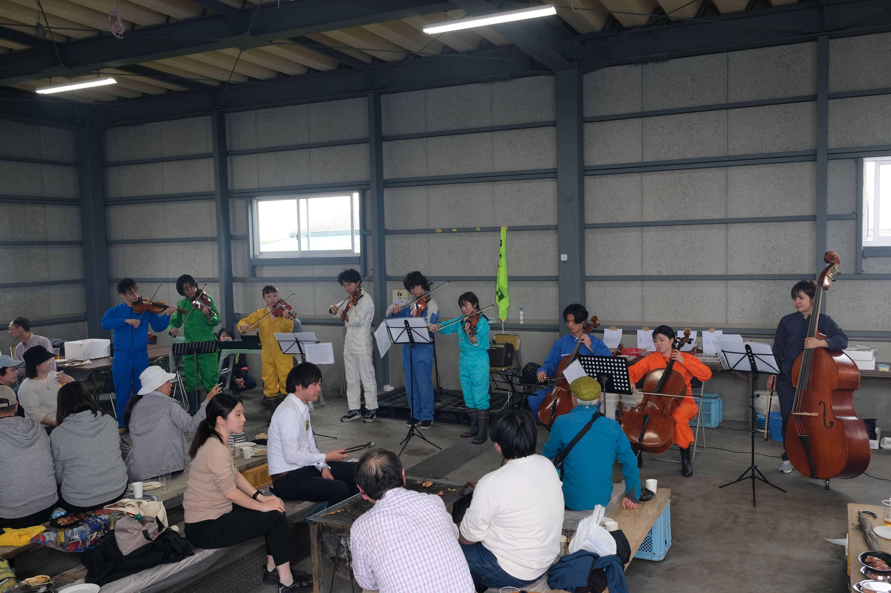

過去の公演情報

2025年12月12日（幌延町）
第1回特別演奏会
ピアノ協奏曲第2番 ハ短調 作品18 第一楽章/ラフマニノフ
フィンランディア/シベリウス
問寒別小中学校校歌/栗林辰雄
地元有志・北大ピアノクラブ部員によるプレコンサート

2025年10月4日（幌延町）
観光列車「秋たびそうや」歓迎イベント
アイネクライネナハトムジーク/モーツァルト
宗谷岬
川の流れのように
JR北海道社歌「北の大地」

2025年7月13日（稚内市）
稚内赤れんが通信所一般公開
ソーラン節
宗谷岬
ジブリメドレー
アイネクライネナハトムジーク/モーツァルト
情熱大陸/葉加瀬太郎
無伴奏チェロ組曲第1番プレリュード/バッハ

2025年6月21日（東京都）
東京大学駒場キャンパス
「音楽で紡ぐ持続可能な未来」
パッサカリア/ヘンデル＝ハルヴォルセン

2025年4月26日・27日（名寄市）
合同展「マージナリア」
ソーラン節
アイネクライネナハトムジーク/モーツァルト
セレナーデ/ハイドン
アンダンテカンタービレ/チャイコフスキー
人生のメリーゴーランド
風の通り道
見上げてごらん夜の星を
川の流れのように
上を向いて歩こう

2025年1月28日（幌延町・稚内市）
ウィンターコンサート
メヌエット/ボッケリーニ
宗谷岬
情熱大陸
他
2024年12月13日（幌延町）
心象館 音楽の夕べ
ルーマニア民族舞曲/バルトーク
金平糖の精の踊り/チャイコフスキー
パガニーニの主題による狂詩曲より第18変奏曲/ラフマニノフ

2024年11月3日（幌延町）
雄信内駅白寿祭
ジブリメドレー
ルーマニア民族舞曲/バルトーク
悲しきワルツ/シベリウス
天塩川
鐵道精神の歌
雄信内小学校校歌
JR北海道社歌「北の大地」

2024年6月23日（稚内市）
抜海駅開業100周年記念式典
ジブリメドレー
JR北海道社歌「北の大地」
宗谷岬
花のワルツ/チャイコフスキー
抜海小中学校校歌
威風堂々/エルガー
2023年12月8日（幌延町） ※正式発足前
心象館 音楽の夕べ
彼こそが海賊
弦楽のためのトリプティーク/芥川也寸志
花のワルツ/チャイコフスキー